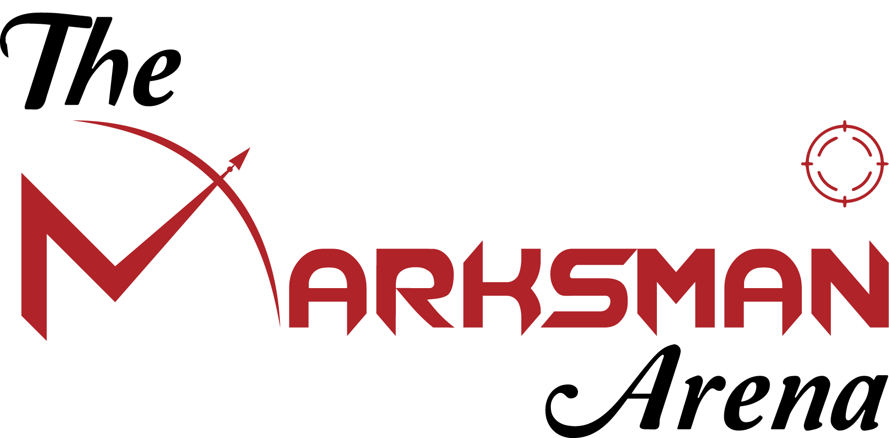

<div class="t_container">
  <div class="transition">
    <div class="cover cover1"></div>
    <div class="cover cover2"></div>
    <div class="cover cover3"></div>
  </div>

  <main>
    <section class="glass">
      <div>
        
        <h1>
          Stay Tuned
          <span>
            <div class="animate seven">
              <span>W</span><span>e</span> &nbsp;
              <span>A</span><span>r</span><span>e</span>&nbsp;
              <span>C</span
              ><span>o</span><span>m</span><span>m</span><span>i</span
              ><span>n</span><span>g</span>
              &nbsp;
              <span>S</span><span>o</span><span>o</span><span>n</span>
            </div></span
          >
        </h1>

        <ul>
            <li>
                <a href="index.html"></a
                ><a href="#"><i class="fa-brands fa-facebook-f"></i></a>
              </li>
              <li>
                <a href="#"><i class="fa-brands fa-instagram"></i></a>
              </li>
              <li>
                <a href="#"><i class="fa-brands fa-twitter"></i></a>
              </li>
              <li>
                <a href="#"><i class="fa-brands fa-youtube"></i></a>
              </li>
        </ul>

        <a class="st_btn link" routerLink="/home">
          <span></span> Back To Home
        </a>
      </div>
    </section>
    <div class="circle1"></div>
    <div class="circle2"></div>
  </main>
</div>
